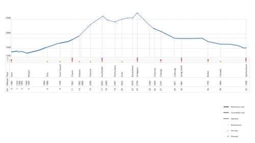
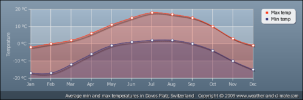
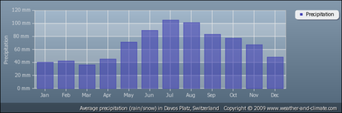
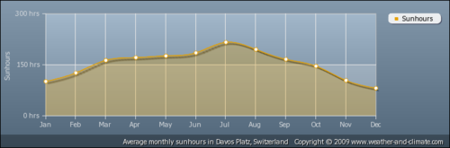

Многие спрашивают меня, где и когда я собираюсь бежать марафон. В связи с этим я и решил написать небольшой пост о нём.
Событие называется Swissalpine и проходит в Швейцарии. В его рамках проходят несколько забегов, рассчитаных на разные дистанции и подходят для людей с разным уровнем подготовки - начиная с дистанции в полкилометра и заканчивая ультрамарафоном в 78 км. В этом году Swissalpine был намечен на 28 июля.
Марафон, который выбрал я, называется K42. Он считается марафоном с наибольшим перепадом высот во всей Европе. Соответственно, он включает в себя бег в/под гору, а также местами трасса проходит через скалистую местность, что добавляет ему сложности и в то же время делает интересней.

Карта перепада высот K42.
Старт марафона проходит в городе Бергун (Bergün) в 10:30 (более 5 часов на преодолелие дистанции) и в 11:30 (менее 5 часов на преодоление дистанции).
Финиш расположен в городе Давос (Davos). Он открыт до 21:00.
Для участия в марафоне необходимо зарегистрироваться и внести членский взнос. Чем ближе дата проведения марафона - тем выше взнос. Начальная сумма была около 109 евро, я немного опоздал с регистрацией и заплатил 114 евро.
В эту сумму входит не просто участие, а также проездной для посещения событий, связанных с марафоном, таких как: экскурсия по трассе, обучение техникам бега в/под гору и пара других. Также в эту сумму включена медицинская помощь, массаж, прощальная вечеринка, медаль и футболка, которую выдают при финишировании.
Маршрут трассы можно посмотреть здесь.
Погодные условия:

Средняя температура.

Средние осадки.

Средняя солнечная активность.
Информация о погодных условиях позаимствована с сайта weather-and-climate.com.